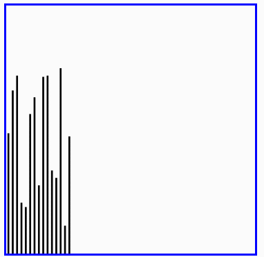

快速排序
快速排序（英语：Quicksort），又称划分交换排序（partition-exchange sort），通过一趟排序将要排序的数据分割成独立的两部分，其中一部分的所有数据都比另外一部分的所有数据都要小，然后再按此方法对这两部分数据分别进行快速排序，整个排序过程可以递归进行，以此达到整个数据变成有序序列。
步骤为：
- 从数列中挑出一个元素，称为"基准"（pivot），
- 重新排序数列，所有元素比基准值小的摆放在基准前面，所有元素比基准值大的摆在基准的后面（相同的数可以到任一边）。在这个分区结束之后，该基准就处于数列的中间位置。这个称为分区（partition）操作。
- 递归地（recursive）把小于基准值元素的子数列和大于基准值元素的子数列排序。
递归的最底部情形，是数列的大小是零或一，也就是永远都已经被排序好了。虽然一直递归下去，但是这个算法总会结束，因为在每次的迭代（iteration）中，它至少会把一个元素摆到它最后的位置去。
快速排序的分析

def quick_sort(alist, start, end):
"""快速排序"""
# 递归的退出条件
if start >= end:
return
# 设定起始元素为要寻找位置的基准元素
mid = alist[start]
# low为序列左边的由左向右移动的游标
low = start
# high为序列右边的由右向左移动的游标
high = end
while low < high:
# 如果low与high未重合，high指向的元素不比基准元素小，则high向左移动
while low < high and alist[high] >= mid:
high -= 1
# 将high指向的元素放到low的位置上
alist[low] = alist[high]
# 如果low与high未重合，low指向的元素比基准元素小，则low向右移动
while low < high and alist[low] < mid:
low += 1
# 将low指向的元素放到high的位置上
alist[high] = alist[low]
# 退出循环后，low与high重合，此时所指位置为基准元素的正确位置
# 将基准元素放到该位置
alist[low] = mid
# 对基准元素左边的子序列进行快速排序
quick_sort(alist, start, low-1)
# 对基准元素右边的子序列进行快速排序
quick_sort(alist, low+1, end)
alist = [54,26,93,17,77,31,44,55,20]
quick_sort(alist,0,len(alist)-1)
print(alist)
时间复杂度
- 最优时间复杂度：O(nlogn)
- 最坏时间复杂度：O(n2)
- 稳定性：不稳定
从一开始快速排序平均需要花费O(n log n)时间的描述并不明显。但是不难观察到的是分区运算，数组的元素都会在每次循环中走访过一次，使用O(n)的时间。在使用结合（concatenation）的版本中，这项运算也是O(n)。
在最好的情况，每次我们运行一次分区，我们会把一个数列分为两个几近相等的片段。这个意思就是每次递归调用处理一半大小的数列。因此，在到达大小为一的数列前，我们只要作log n次嵌套的调用。这个意思就是调用树的深度是O(log n)。但是在同一层次结构的两个程序调用中，不会处理到原来数列的相同部分；因此，程序调用的每一层次结构总共全部仅需要O(n)的时间（每个调用有某些共同的额外耗费，但是因为在每一层次结构仅仅只有O(n)个调用，这些被归纳在O(n)系数中）。结果是这个算法仅需使用O(n log n)时间。
快速排序演示
